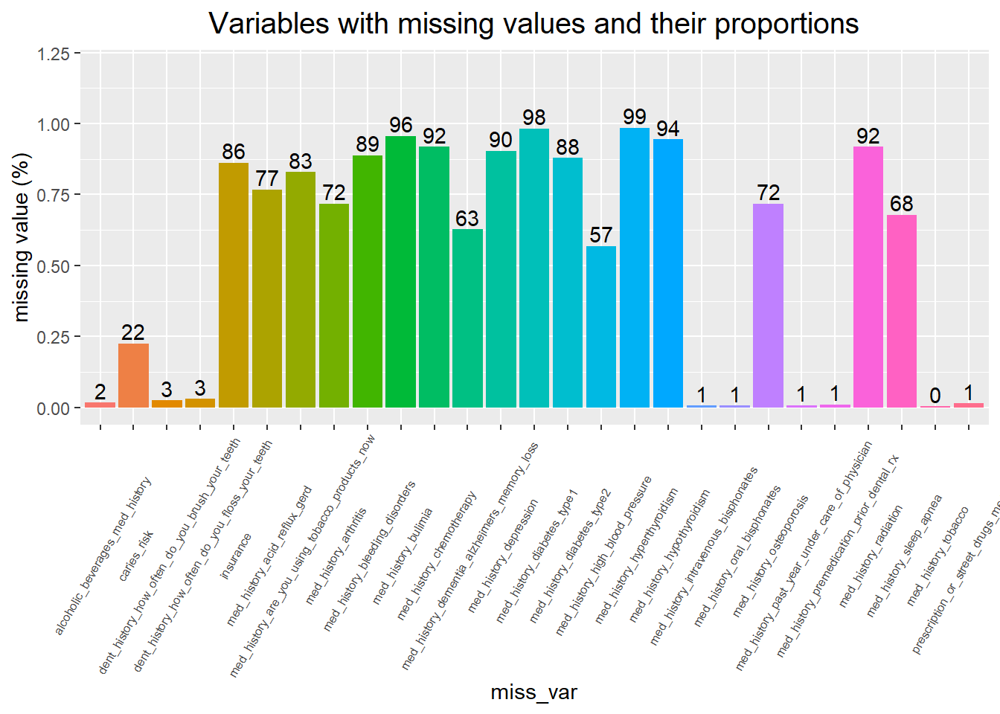
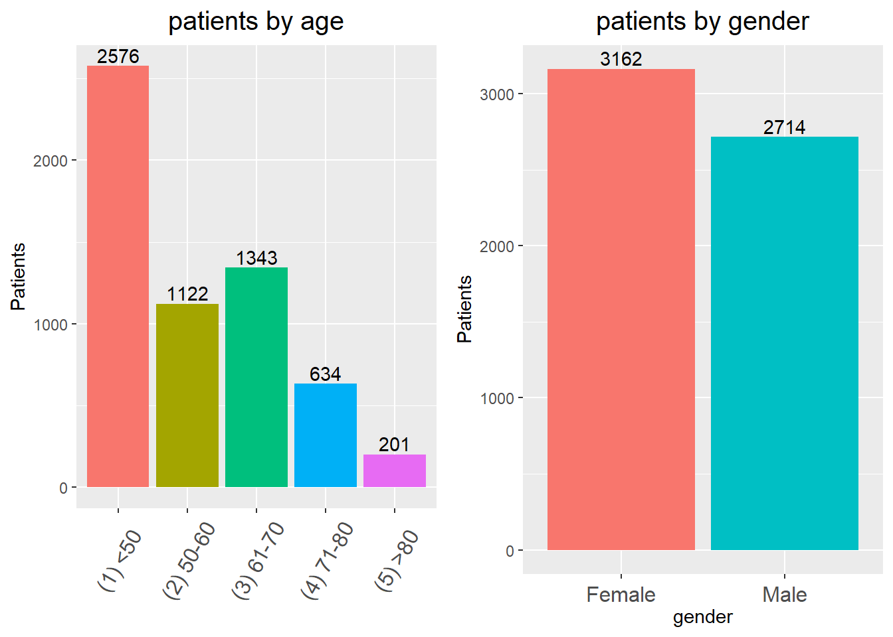

2/17/2022
Last updated: 2022-05-05
Checks: 6 1
Knit directory: Collaborations/
This reproducible R Markdown analysis was created with workflowr (version 1.7.0). The Checks tab describes the reproducibility checks that were applied when the results were created. The Past versions tab lists the development history.
The R Markdown file has unstaged changes. To know which version of the R Markdown file created these results, you’ll want to first commit it to the Git repo. If you’re still working on the analysis, you can ignore this warning. When you’re finished, you can run wflow_publish to commit the R Markdown file and build the HTML.
Great job! The global environment was empty. Objects defined in the global environment can affect the analysis in your R Markdown file in unknown ways. For reproduciblity it’s best to always run the code in an empty environment.
The command set.seed(20210523) was run prior to running the code in the R Markdown file. Setting a seed ensures that any results that rely on randomness, e.g. subsampling or permutations, are reproducible.
Great job! Recording the operating system, R version, and package versions is critical for reproducibility.
Nice! There were no cached chunks for this analysis, so you can be confident that you successfully produced the results during this run.
Great job! Using relative paths to the files within your workflowr project makes it easier to run your code on other machines.
Great! You are using Git for version control. Tracking code development and connecting the code version to the results is critical for reproducibility.
The results in this page were generated with repository version 1c75adb. See the Past versions tab to see a history of the changes made to the R Markdown and HTML files.
Note that you need to be careful to ensure that all relevant files for the analysis have been committed to Git prior to generating the results (you can use wflow_publish or wflow_git_commit). workflowr only checks the R Markdown file, but you know if there are other scripts or data files that it depends on. Below is the status of the Git repository when the results were generated:
Ignored files:
Ignored: analysis/.Rhistory
Unstaged changes:
Modified: analysis/2022_Feb4.Rmd
Note that any generated files, e.g. HTML, png, CSS, etc., are not included in this status report because it is ok for generated content to have uncommitted changes.
These are the previous versions of the repository in which changes were made to the R Markdown (analysis/2022_Feb4.Rmd) and HTML (docs/2022_Feb4.html) files. If you’ve configured a remote Git repository (see ?wflow_git_remote), click on the hyperlinks in the table below to view the files as they were in that past version.
| File | Version | Author | Date | Message |
|---|---|---|---|---|
| Rmd | e4cf46d | Han | 2022-04-21 | 4/21/2022 |
| html | e4cf46d | Han | 2022-04-21 | 4/21/2022 |
| Rmd | 1a1a7fa | Han | 2022-04-18 | 4/18/2022 |
| html | 1a1a7fa | Han | 2022-04-18 | 4/18/2022 |
| Rmd | b9b6e99 | Han | 2022-04-07 | 4/7/2022 |
| html | b9b6e99 | Han | 2022-04-07 | 4/7/2022 |
| Rmd | ea918a0 | Han | 2022-04-06 | 4/6/2022 |
| html | ea918a0 | Han | 2022-04-06 | 4/6/2022 |
| Rmd | fa7eff1 | Han | 2022-04-01 | 4/1/2022 |
| html | fa7eff1 | Han | 2022-04-01 | 4/1/2022 |
| Rmd | 3e2fd41 | Han | 2022-03-18 | 3/18/2022 |
| html | 3e2fd41 | Han | 2022-03-18 | 3/18/2022 |
| Rmd | 5843fa8 | Han | 2022-03-18 | 3/18/2022 |
| html | 5843fa8 | Han | 2022-03-18 | 3/18/2022 |
| Rmd | 3399aaf | Han | 2022-03-17 | 3/17/2022 |
| html | 3399aaf | Han | 2022-03-17 | 3/17/2022 |
| Rmd | c1b63d8 | Han | 2022-03-07 | 3/7/2022 |
| html | c1b63d8 | Han | 2022-03-07 | 3/7/2022 |
| Rmd | 6b7dda0 | Han | 2022-03-07 | 3/7/2022 |
| html | 6b7dda0 | Han | 2022-03-07 | 3/7/2022 |
| Rmd | 7e83a63 | Han | 2022-03-04 | 3/4/2022 |
| html | 7e83a63 | Han | 2022-03-04 | 3/4/2022 |
| Rmd | 68dbd81 | Han | 2022-03-04 | 3/4/2022 |
| html | 68dbd81 | Han | 2022-03-04 | 3/4/2022 |
| Rmd | a241b51 | Han | 2022-03-04 | 3/4/2022 |
| html | a241b51 | Han | 2022-03-04 | 3/4/2022 |
| Rmd | 3496e53 | Han | 2022-03-04 | 3/4/2022 |
| html | 3496e53 | Han | 2022-03-04 | 3/4/2022 |
| Rmd | d5dfad3 | Han | 2022-03-04 | 3/4/2022 |
| html | d5dfad3 | Han | 2022-03-04 | 3/4/2022 |
| Rmd | 7c5159a | Han | 2022-03-04 | 3/4/2022 |
| html | 7c5159a | Han | 2022-03-04 | 3/4/2022 |
| Rmd | 16d7ab4 | Han | 2022-02-25 | 2/25/2022 |
| html | 16d7ab4 | Han | 2022-02-25 | 2/25/2022 |
| Rmd | 9c961fd | Han | 2022-02-17 | 2/17/2022 |
| html | 9c961fd | Han | 2022-02-17 | 2/17/2022 |
Data Quality (Mar4)
- missing variables are coded as
N_A - In med history columns with Yes/No answers, if the answer is Yes, it is marked as 1. If the answer is No, then it’s marked as 0. If its not available, it’s marked as 2.
- for gender, 0=Unknown, 1=Male, 2=Female
there are 5876 rows and 93 variables | x |
|---|
| Postal |
| Sex |
| TreatmentDate |
| Age_at_exam |
| Age_at_report |
| study_id |
| permanent_teeth_present |
| permanent_teeth_missing |
| teeth_affected_caries |
| teeth_surfaces_affected_caries |
| number_of_teeth_with_fixed_restorations |
| number_of_direct_restorations_surfaces |
| number_of_indirect_restorations |
| restored_teeth |
| number_of_implants |
| number_of_removable_dentures |
| number_caries_preventive |
| DMFT |
| treatment_plan_exists |
| insurance |
| caries_risk |
| number_of_teeth_direct_restorations_without_caries |
| med_history_past_year_under_care_of_physician |
| med_history_radiation |
| med_history_chemotherapy |
| med_history_oral_bisphonates |
| med_history_intravenous_bisphonates |
| med_history_tobacco |
| alcoholic_beverages_med_history |
| prescription_or_street_drugs_med_history |
| have_you_been_to_the_dentist_before |
| dent_history_extractions |
| dent_history_implants |
| dent_history_tmj_surgery |
| dent_history_periodontal_gum_treatments |
| dent_history_bridges |
| dent_history_dentures |
| dent_history_partials |
| dent_history_root_canal_treatment |
| dent_history_orthodontic_braces |
| dent_history_currently_experiencing_dental_pain_or_discomfort |
| dent_history_clicking |
| dent_history_popping |
| dent_history_discomfort_jaw_opening |
| dent_history_limited_opening |
| dent_history_how_often_do_you_brush_your_teeth |
| dent_history_how_often_do_you_floss_your_teeth |
| dent_history_clench |
| dent_history_brux_grind |
| med_history_high_blood_pressure |
| med_history_sleep_apnea |
| med_history_diabetes_type1 |
| med_history_diabetes_type2 |
| med_history_hypothyroidism |
| med_history_hyperthyroidism |
| med_history_dementia_alzheimers_memory_loss |
| med_history_depression |
| med_history_bleeding_disorders |
| med_history_acid_reflux_gerd |
| med_history_arthritis |
| med_history_osteoporosis |
| dent_history_temporomandibular_joint_disorder |
| med_history_bulimia |
| med_history_premedication_prior_dental_rx |
| dent_history_do_you_brush_with_fluoride_toothpaste |
| dent_history_is_there_fluoride_in_your_drinking_water |
| dent_history_do_you_snack_between_meals |
| dent_history_do_you_feel_you_have_too_little_saliva_in_your_mouth |
| med_history_are_you_using_tobacco_products_now |
| city |
| county |
| county_health_outcomes_rank |
| county_health_factors_rank |
| county_dentist_rate |
| county_percent_uninsured |
| county_primary_care_physicians_rate |
| county_percent_completed_high_school |
| county_percent_some_college |
| county_percent_unemployed |
| county_percent_fair_or_poor_health |
| county_percent_smokers |
| county_food_environment_index |
| county_excessive_drinking |
| county_population_count |
| county_life_expectancy_rate |
| county_percent_black |
| county_percent_american_indian_alaska_native |
| county_percent_asian |
| county_percent_native_hawaiian_other_pacific_islander |
| county_percent_hispanic |
| county_percent_non_hispanic_white |
| county_percent_female |
| county_percent_rural |
 it appears that med_history_depression, med_history_diabetes_type1, med_history_hypothyroidism, med_history_hyperthyroidism have missing values as high as >90%.
split by county
- use column
county - some
0’s are not exactly zero, but close to 0.

- pick the top 7 counties and the rest as others
split by age and gender

- use
Age_at_examas age variable
merge disease status
0:No; 1:yes; 2:missing
| disease 1 | disease 2 | disease 1 + disease 2 |
|---|---|---|
| 0 | 0 | 0 |
| 0 | 1 | 1 |
| 0 | 2 | 0 |
| 1 | 0 | 1 |
| 1 | 1 | 1 |
| 1 | 2 | 1 |
| 2 | 0 | 0 |
| 2 | 1 | 1 |
| 2 | 2 | 2 |

- combing diseases doesn’t seem to improve too much
- radiation and chemotherapy appears both to patients
natural dentition

- use
permanent_teeth_presentto count the number of teeth.
caries
- use column
teeth_affected_cariesto count number of teeth effected by caries

- Comparison between Milwaukee and non-Milwaukee may not be fair due to dominating population from Milwaukee
Medical conditions
- use
get(medical_condition[i])!=2to count number of patients, i.e. without missing values
med_history_arthritis
OR 2.5 % 97.5 % p_value
(Intercept) 2.003730e-01 2.334843e-02 4.330388e+00 1.851299e-01
Age_at_exam 1.057258e+00 1.048421e+00 1.066425e+00 1.160783e-37
Sex 1.106255e+00 8.714650e-01 1.402933e+00 4.055399e-01
countyBrown 2.071577e-01 7.557389e-03 2.853641e+00 2.646750e-01
countyCalumet 2.512518e+06 1.897830e-93 NA 9.894416e-01
countyColumbia 4.531543e-01 1.371214e-02 1.512914e+01 6.231637e-01
countyCrawford 1.693322e+06 Inf Inf 9.952310e-01
countyDane 4.408577e-01 1.997475e-02 3.939762e+00 5.060210e-01
countyDodge 4.290600e-01 1.804649e-02 4.534147e+00 5.145127e-01
countyDoor 2.267259e-01 5.970635e-03 5.055870e+00 3.643209e-01
countyFond du Lac 1.517853e-01 6.249469e-03 1.622566e+00 1.506780e-01
countyForest 3.156717e+06 8.186618e-187 NA 9.950239e-01
countyGreen 1.958965e+06 Inf Inf 9.931783e-01
countyGreen Lake 1.992838e-01 5.094076e-03 7.428286e+00 3.426336e-01
countyJefferson 2.125806e-01 9.204703e-03 2.076962e+00 2.229454e-01
countyJuneau 1.084657e+06 3.725255e-183 NA 9.953791e-01
countyKenosha 2.341254e-01 1.058106e-02 2.096853e+00 2.391277e-01
countyKewaunee 1.719371e+06 Inf Inf 9.902525e-01
countyLafayette 9.226695e-09 NA 3.119112e+203 9.938481e-01
countyLanglade 8.258543e+05 Inf Inf 9.935912e-01
countyManitowoc 4.010268e-01 1.301970e-02 7.354919e+00 5.456893e-01
countyMarathon 1.084657e+06 2.272052e-160 NA 9.953791e-01
countyMarquette 9.465338e-08 NA 3.070209e+204 9.946223e-01
countyMilwaukee 3.918446e-01 1.884817e-02 3.082484e+00 4.264159e-01
countyMonroe 1.979835e+06 Inf 2.181339e+286 9.916449e-01
countyOconto 1.095971e+06 2.256348e-160 NA 9.953757e-01
countyOneida 1.601617e+06 5.058509e-200 NA 9.952495e-01
countyOutagamie 1.618838e-01 5.916357e-03 2.223190e+00 1.965667e-01
countyOzaukee 3.383637e-01 1.560181e-02 2.906436e+00 3.727173e-01
countyPortage 7.333295e-02 1.388518e-03 1.795680e+00 1.313452e-01
countyRacine 2.895601e-01 1.365092e-02 2.373939e+00 3.000437e-01
countyRichland 8.169170e-09 NA 2.745712e+203 9.938077e-01
countyRock 3.310678e-01 1.341471e-02 3.801293e+00 4.061856e-01
countySauk 3.337463e+06 Inf Inf 9.950054e-01
countySawyer 9.754995e-09 NA 3.299702e+203 9.938667e-01
countySheboygan 3.880083e-01 1.705718e-02 3.700614e+00 4.518518e-01
countyWalworth 2.618176e-01 1.203923e-02 2.261077e+00 2.712381e-01
countyWashington 4.665998e-01 2.138209e-02 4.067214e+00 5.325411e-01
countyWaukesha 2.788559e-01 1.328544e-02 2.237159e+00 2.818194e-01
countyWaupaca 9.178041e+05 1.053825e-34 Inf 9.954347e-01
countyWaushara 1.684716e+06 Inf 2.029233e+271 9.911156e-01
countyWinnebago 2.149418e+06 Inf 2.442486e+234 9.895895e-01
countyWood 1.593361e+06 Inf Inf 9.932210e-01use 1160/1657 patients with arthritis by
med_history_arthritis!=2all predictors are assumed to be independent, without interactions
by default, R treats the lowest level group as reference category
Sex=1is the reference group among gendercounty
Adamsas baseline, reference age groupwhen increase age by one year (unit), while with other covariates fixed, the odds of having arthritis for older individual is 1.06 times the odds for young individual.
only age is significant
Bulimia_acid_reflux_sleep_apnea
OR 2.5 % 97.5 % p_value
(Intercept) 7.943580e-02 3.923606e-03 5.796654e-01 2.768904e-02
Age_at_exam 1.023359e+00 1.018018e+00 1.028798e+00 8.267788e-18
Sex 9.026311e-01 7.641973e-01 1.066322e+00 2.279773e-01
countyBrown 4.214305e+00 4.319011e-01 9.810118e+01 2.587434e-01
countyCalumet 2.148758e+07 4.862708e+267 Inf 9.811354e-01
countyChippewa 2.361839e+07 1.043638e-121 NA 9.906927e-01
countyColumbia 6.677733e+00 5.096769e-01 1.950369e+02 1.834004e-01
countyCrawford 1.709461e+07 7.557974e-122 NA 9.908699e-01
countyDane 2.628562e+00 3.475687e-01 5.399945e+01 4.066108e-01
countyDodge 3.992730e+00 5.014929e-01 8.404242e+01 2.433957e-01
countyDoor 1.210152e+00 3.590698e-02 4.132900e+01 9.064967e-01
countyFond du Lac 8.540304e-01 7.665453e-02 2.031040e+01 9.036328e-01
countyGrant 1.142015e-06 NA 4.522849e+102 9.924989e-01
countyGreen 2.041726e+00 5.695834e-02 7.722963e+01 6.700871e-01
countyGreen Lake 1.001533e+01 5.645007e-01 4.582618e+02 1.539965e-01
countyIowa 1.832074e+07 8.096917e-122 NA 9.908319e-01
countyJefferson 3.361177e+00 4.204200e-01 7.083834e+01 3.075739e-01
countyJuneau 5.642305e+00 2.614508e-01 2.748298e+02 3.007078e-01
countyKenosha 6.063390e+00 8.107373e-01 1.240541e+02 1.204044e-01
countyKewaunee 2.842199e+00 1.622869e-01 9.089806e+01 4.893719e-01
countyLa Crosse 1.558646e+07 6.896339e-122 NA 9.909206e-01
countyLanglade 1.435535e+07 6.364227e-122 NA 9.909657e-01
countyManitowoc 7.791787e-07 2.608984e-199 2.648451e-178 9.777404e-01
countyMarathon 4.613819e+07 2.057073e-121 NA 9.903256e-01
countyMarinette 1.491520e-06 NA 5.854171e+102 9.926453e-01
countyMarquette 8.666629e+00 4.048294e-01 4.200011e+02 1.954791e-01
countyMilwaukee 2.599511e+00 3.716002e-01 5.158982e+01 3.986865e-01
countyMonroe 9.331261e+00 5.244478e-01 4.276282e+02 1.673521e-01
countyOconto 1.531554e+07 7.121562e-63 NA 9.871592e-01
countyOneida 5.038673e-07 NA 1.998135e+102 9.920504e-01
countyOutagamie 5.334292e+00 3.725429e-01 1.605450e+02 2.497101e-01
countyOzaukee 3.097684e+00 4.164136e-01 6.318190e+01 3.287731e-01
countyPortage 2.023406e+00 5.706718e-02 7.564742e+01 6.726166e-01
countyPrice 5.526217e-07 NA 2.204268e+102 9.921010e-01
countyRacine 3.734015e+00 5.188902e-01 7.504215e+01 2.493915e-01
countyRichland 3.332279e+00 8.043369e-02 1.866085e+02 5.064037e-01
countyRock 2.482185e+00 2.763644e-01 5.516083e+01 4.618372e-01
countySauk 1.200677e+00 3.580193e-02 4.079229e+01 9.101423e-01
countySawyer 6.871591e-07 NA 2.752328e+102 9.922204e-01
countySheboygan 3.872446e+00 4.899255e-01 8.122574e+01 2.527249e-01
countyVernon 6.961572e-07 NA 2.775549e+102 9.922276e-01
countyVilas 1.359933e-06 NA 5.376616e+102 9.925947e-01
countyWalworth 4.210081e+00 5.662841e-01 8.587176e+01 2.143537e-01
countyWashington 2.420369e+00 3.204195e-01 4.969185e+01 4.476271e-01
countyWaukesha 2.787168e+00 3.941342e-01 5.557670e+01 3.670777e-01
countyWaupaca 8.075564e+00 6.017281e-01 2.393973e+02 1.464650e-01
countyWaushara 2.823716e+00 1.599580e-01 9.078351e+01 4.932155e-01
countyWinnebago 4.979688e+00 4.831444e-01 1.208655e+02 2.183098e-01
countyWood 8.601040e+00 3.952887e-01 4.212395e+02 1.991368e-011046/2507 have
Bulimia_acid_reflux_sleep_apnea==1only age is significant
med_history_depression
OR 2.5 % 97.5 % p_value
(Intercept) 4.821350e+07 0.000000e+00 NA 0.9964321
Age_at_exam 1.003716e+00 9.877416e-01 1.019937e+00 0.6495280
Sex 8.435858e-01 4.778537e-01 1.452254e+00 0.5469735
countyBrown 1.018832e+00 2.652887e-16 3.419093e+18 0.9999967
countyCalumet 9.707660e-01 1.196613e-33 5.337636e+32 0.9999958
countyChippewa 8.593749e-01 2.440008e-23 1.922911e+19 0.9999784
countyColumbia 8.919285e-01 7.391099e-26 2.365448e+25 0.9999812
countyDane 8.933253e-01 7.506396e-17 4.252346e+13 0.9999781
countyDodge 1.229491e-07 NA 2.973761e+119 0.9967910
countyFond du Lac 2.216716e-08 NA Inf 0.9964455
countyForest 1.014946e+00 9.644249e-26 1.066651e+22 0.9999979
countyJefferson 9.359234e-08 NA Inf 0.9967359
countyKenosha 3.025115e-07 NA 5.877140e+299 0.9969726
countyKewaunee 9.143662e-01 2.550339e-30 3.278253e+29 0.9999853
countyMarquette 9.962981e-01 2.043713e-32 8.047008e+30 0.9999995
countyMilwaukee 1.517536e-07 NA Inf 0.9968334
countyOutagamie 1.037784e+00 4.018479e-25 7.693388e+26 0.9999947
countyOzaukee 1.538505e-07 NA Inf 0.9968362
countyPortage 5.545203e-16 NA Inf 0.9949904
countyRacine 1.618855e-07 NA Inf 0.9968465
countyRock 9.926100e-01 2.192473e-33 5.808728e+32 0.9999989
countySauk 1.018717e+00 2.162357e-33 1.782712e+33 0.9999974
countySheboygan 7.689925e-08 NA Inf 0.9966963
countyWalworth 3.797622e-08 NA Inf 0.9965540
countyWashington 1.008374e-07 NA Inf 0.9967510
countyWaukesha 4.384677e-07 NA Inf 0.9970474
countyWaupaca 1.076995e+00 3.737662e-32 7.871655e+31 0.9999894
countyWinnebago 1.004701e+00 1.234790e-19 6.691308e+15 0.9999992
countyWood 1.003716e+00 1.163288e-33 8.660320e+32 0.9999995553/563 patients have depression
no predictors are statistically significant
med_history_diabetes_type1+med_history_diabetes_type2
OR 2.5 % 97.5 % p_value
(Intercept) 1.333172e+10 0.000000000 NA 0.9991001
Age_at_exam 1.002023e+00 0.908103542 1.099085 0.9662946
Sex 1.537216e-01 0.006551221 1.436910 0.1382162
countyBrown 3.516986e+00 0.000000000 Inf 0.9999650
countyColumbia 9.799464e-01 0.000000000 Inf 0.9999994
countyDane 3.323424e+00 0.000000000 Inf 0.9999563
countyDodge 2.864682e+00 0.000000000 Inf 0.9999633
countyFond du Lac 7.052701e+00 0.000000000 Inf 0.9999565
countyGreen Lake 3.459619e+00 0.000000000 Inf 0.9999655
countyIowa 9.959078e-01 0.000000000 Inf 0.9999999
countyJefferson 4.941803e+00 0.000000000 Inf 0.9999493
countyKenosha 3.643837e+00 0.000000000 Inf 0.9999524
countyManitowoc 6.544459e+00 0.000000000 Inf 0.9999581
countyMilwaukee 8.527526e-07 NA Inf 0.9994606
countyOzaukee 3.105501e+00 0.000000000 Inf 0.9999583
countyPortage 6.570971e+00 0.000000000 Inf 0.9999580
countyRacine 7.593507e-08 NA Inf 0.9993672
countyRock 4.897357e+00 0.000000000 Inf 0.9999496
countySauk 3.551737e+00 0.000000000 Inf 0.9999648
countySheboygan 5.771699e-09 NA Inf 0.9992677
countyWalworth 3.963886e+00 0.000000000 Inf 0.9999495
countyWashington 3.351028e+00 0.000000000 Inf 0.9999554
countyWaukesha 3.257057e+00 0.000000000 NA 0.9999550
countyWaupaca 3.391991e+00 0.000000000 Inf 0.9999660
countyWinnebago 1.023905e+00 0.000000000 Inf 0.9999994773/777 has DB
none variable is significant
med_history_hyperthyroidism+med_history_hypothyroidism:thyroid disease
OR 2.5 % 97.5 % p_value
(Intercept) 8.649743e+03 0.0000000 Inf 0.9999449
Age_at_exam 9.400186e-01 0.7574231 1.103138 0.4582574
Sex 3.850256e+08 0.0000000 NA 0.9977515
countyDane 2.195415e-01 0.0000000 Inf 0.9999911
countyDodge 3.308581e-02 0.0000000 Inf 0.9999806
countyDoor 3.326328e-09 0.0000000 Inf 0.9999160
countyFond du Lac 7.118882e-01 0.0000000 Inf 0.9999983
countyGrant 3.588202e-10 0.0000000 Inf 0.9999064
countyGreen Lake 2.157348e-09 0.0000000 Inf 0.9999141
countyJefferson 2.013478e-09 0.0000000 Inf 0.9998941
countyJuneau 4.319839e-10 0.0000000 Inf 0.9999072
countyKenosha 1.206315e-01 0.0000000 Inf 0.9999874
countyKewaunee 1.236368e-09 0.0000000 Inf 0.9999117
countyManitowoc 3.126807e-09 0.0000000 Inf 0.9999157
countyMarquette 2.130156e-01 0.0000000 Inf 0.9999933
countyMilwaukee 8.240365e-10 NA Inf 0.9998726
countyOconto 1.563485e-01 0.0000000 Inf 0.9999920
countyOzaukee 5.617005e-02 0.0000000 Inf 0.9999828
countyPortage 1.236368e-09 0.0000000 Inf 0.9999117
countyRacine 7.356854e-02 0.0000000 Inf 0.9999843
countyRock 2.186461e-09 0.0000000 Inf 0.9999007
countySheboygan 1.179916e-01 0.0000000 Inf 0.9999882
countyWalworth 1.333241e-01 0.0000000 Inf 0.9999881
countyWashington 6.141787e-02 0.0000000 Inf 0.9999835
countyWaukesha 2.154158e-01 0.0000000 Inf 0.9999907
countyWinnebago 2.358705e-01 0.0000000 Inf 0.9999921
countyWood 4.319844e-10 0.0000000 Inf 0.9999072373/374 have thyroid diseases
none variable is significant
med_history_radiation+med_history_chemotherapy
OR 2.5 % 97.5 % p_value
(Intercept) 6.986804e-10 NA Inf 9.957482e-01
Age_at_exam 1.086107e+00 1.068412e+00 1.105629e+00 2.592187e-21
Sex 1.158569e+00 8.400364e-01 8.322809e-01 5.571482e-01
countyBrown 1.582435e+07 0.000000e+00 NA 9.966567e-01
countyCalumet 3.137225e+14 0.000000e+00 NA 9.952398e-01
countyColumbia 1.791681e+14 0.000000e+00 NA 9.953197e-01
countyDane 5.767606e+06 0.000000e+00 NA 9.968603e-01
countyDodge 2.152216e-01 1.211280e-38 5.773861e+28 9.997152e-01
countyFond du Lac 1.475103e+07 0.000000e+00 NA 9.966709e-01
countyGrant 2.135199e+15 0.000000e+00 NA 9.949663e-01
countyGreen Lake 1.851778e+14 8.946772e-56 Inf 9.945897e-01
countyJefferson 1.245003e+07 0.000000e+00 NA 9.967051e-01
countyKenosha 7.576868e+06 0.000000e+00 NA 9.968053e-01
countyManitowoc 1.494530e+00 4.810525e-24 5.621855e+23 9.999338e-01
countyMarquette 3.469297e+14 0.000000e+00 NA 9.952254e-01
countyMilwaukee 2.428822e+07 0.000000e+00 NA 9.965703e-01
countyOutagamie 1.287569e+14 0.000000e+00 NA 9.953668e-01
countyOzaukee 9.245134e+06 0.000000e+00 NA 9.967651e-01
countyPortage 4.092481e+14 0.000000e+00 NA 9.952019e-01
countyRacine 6.943073e+06 0.000000e+00 NA 9.968229e-01
countyRichland 1.469289e-01 5.612380e-29 6.758854e+25 9.997265e-01
countyRock 5.736316e+14 8.057135e-49 Inf 9.937281e-01
countySauk 5.694781e+14 0.000000e+00 NA 9.951548e-01
countySawyer 1.916674e-01 3.905668e-30 1.025834e+28 9.997644e-01
countySheboygan 2.265328e+07 0.000000e+00 NA 9.965844e-01
countyVernon 2.941009e+14 0.000000e+00 NA 9.952490e-01
countyWalworth 2.401707e+07 0.000000e+00 NA 9.965726e-01
countyWashington 1.781569e+07 0.000000e+00 NA 9.966328e-01
countyWaukesha 1.835004e+07 0.000000e+00 NA 9.966269e-01
countyWaupaca 2.113518e+14 0.000000e+00 NA 9.952961e-01
countyWaushara 9.482841e+13 Inf Inf 9.946381e-01317/484 receive either radiation or chemotherapy
only age is significant
med_history_tobacco
OR 2.5 % 97.5 % p_value
(Intercept) 0.4147412 0.3763832 0.456697 3.522860e-71
permanent_teeth_missing 1.0706733 1.0605688 1.081034 1.339797e-44
teeth_affected_caries 1.0528640 1.0418741 1.064036 8.311928e-222582/5852 patients are tobacco users
both predictors are significant
statistical software
_
platform x86_64-w64-mingw32
arch x86_64
os mingw32
system x86_64, mingw32
status
major 4
minor 1.2
year 2021
month 11
day 01
svn rev 81115
language R
version.string R version 4.1.2 (2021-11-01)
nickname Bird Hippie
sessionInfo()R version 4.1.2 (2021-11-01)
Platform: x86_64-w64-mingw32/x64 (64-bit)
Running under: Windows 10 x64 (build 18363)
Matrix products: default
locale:
[1] LC_COLLATE=English_United States.1252
[2] LC_CTYPE=English_United States.1252
[3] LC_MONETARY=English_United States.1252
[4] LC_NUMERIC=C
[5] LC_TIME=English_United States.1252
attached base packages:
[1] stats graphics grDevices utils datasets methods base
other attached packages:
[1] ggpubr_0.4.0 forcats_0.5.1 stringr_1.4.0 dplyr_1.0.7
[5] purrr_0.3.4 readr_2.1.1 tidyr_1.1.4 tibble_3.1.6
[9] ggplot2_3.3.5 tidyverse_1.3.1 kableExtra_1.3.4
loaded via a namespace (and not attached):
[1] httr_1.4.2 sass_0.4.1 jsonlite_1.7.3 viridisLite_0.4.0
[5] carData_3.0-5 modelr_0.1.8 bslib_0.3.1 assertthat_0.2.1
[9] highr_0.9 cellranger_1.1.0 yaml_2.2.2 pillar_1.6.5
[13] backports_1.4.1 glue_1.6.0 digest_0.6.29 promises_1.2.0.1
[17] ggsignif_0.6.3 rvest_1.0.2 colorspace_2.0-2 cowplot_1.1.1
[21] htmltools_0.5.2 httpuv_1.6.5 pkgconfig_2.0.3 broom_0.7.11
[25] haven_2.4.3 scales_1.1.1 webshot_0.5.2 svglite_2.0.0
[29] whisker_0.4 later_1.3.0 tzdb_0.2.0 git2r_0.29.0
[33] generics_0.1.1 farver_2.1.0 car_3.0-12 ellipsis_0.3.2
[37] withr_2.4.3 cli_3.1.1 magrittr_2.0.1 crayon_1.4.2
[41] readxl_1.3.1 evaluate_0.14 fs_1.5.2 fansi_1.0.2
[45] MASS_7.3-54 rstatix_0.7.0 xml2_1.3.3 tools_4.1.2
[49] hms_1.1.1 lifecycle_1.0.1 munsell_0.5.0 reprex_2.0.1
[53] compiler_4.1.2 jquerylib_0.1.4 systemfonts_1.0.3 rlang_0.4.12
[57] grid_4.1.2 rstudioapi_0.13 labeling_0.4.2 rmarkdown_2.11
[61] gtable_0.3.0 abind_1.4-5 DBI_1.1.2 R6_2.5.1
[65] lubridate_1.8.0 knitr_1.37 fastmap_1.1.0 utf8_1.2.2
[69] workflowr_1.7.0 rprojroot_2.0.2 stringi_1.7.6 Rcpp_1.0.8
[73] vctrs_0.3.8 dbplyr_2.1.1 tidyselect_1.1.1 xfun_0.29